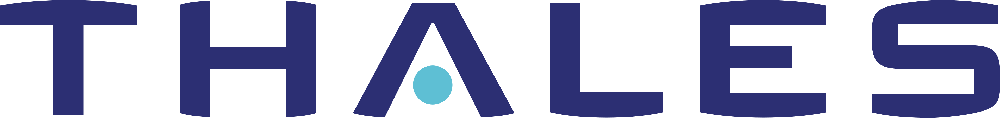
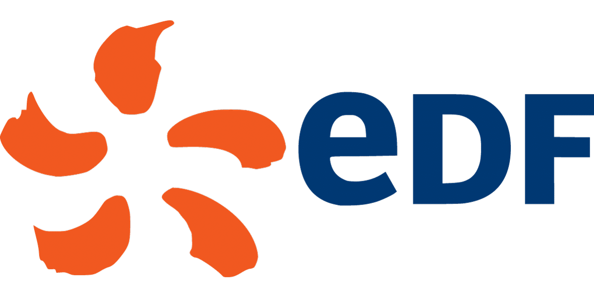
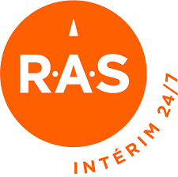
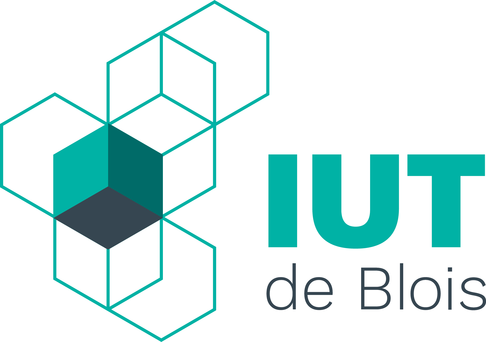
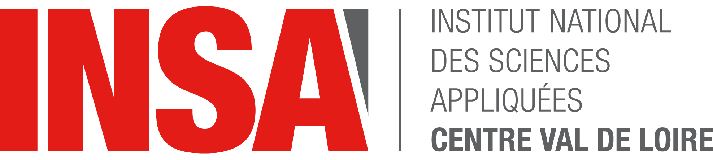
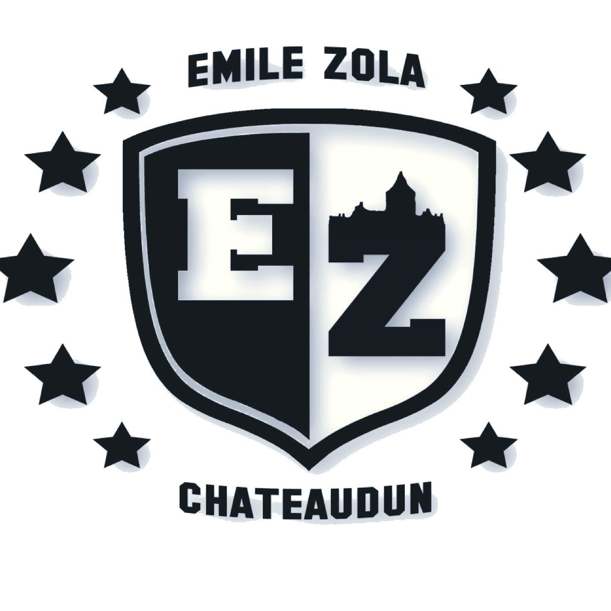
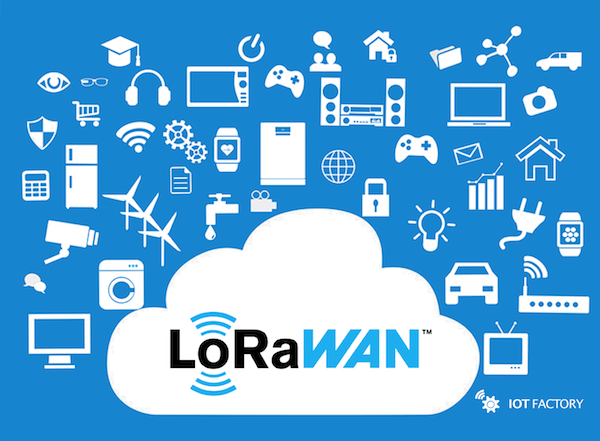
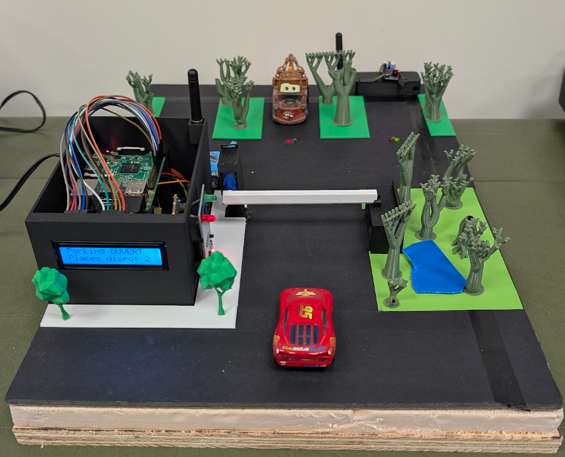

Thomas VIALON
Étudiant en 3ème année de BUT Réseaux et Télécommunications (parcours IoT & Mobilité) — Alternant en télécommunication chez EDF
Futur apprenti Intégrateur 5G chez Thales SIX GTS, en formation à l'ENSEEIHT (Toulouse)
Qui suis-je ?
Je m'appelle Thomas VIALON, étudiant en 3ème et dernière année de BUT Réseaux et Télécommunications, parcours Internet des Objets et Mobilité (IOM), à l'IUT de Blois, actuellement en alternance chez EDF. Passionné par les nouvelles technologies, je m'intéresse particulièrement aux réseaux, aux télécommunications et aux projets liés à l'IoT.
À la rentrée 2026, je poursuivrai mon parcours à l'ENSEEIHT (Toulouse), au sein du département Sciences du Numérique, en apprentissage chez Thales SIX GTS en tant qu'intégrateur 5G. Mon objectif est de continuer à développer mes compétences pour évoluer vers l'ingénierie réseaux et télécoms.
En dehors de mon parcours académique et professionnel, je pratique régulièrement le sport, notamment la course à pied, l'escalade et la randonnée.
Ce portfolio présente mes compétences, mon parcours et mes projets réalisés dans le cadre de mes études et de mon alternance. N'hésitez pas à me contacter pour toute question ou opportunité de collaboration !
ParcoursExpérience professionnelle

Apprenti Intégrateur 5G
Thales SIX GTS, Gennevilliers
Alternance dans le cadre de mon cursus ingénieur à l'ENSEEIHT, au sein des équipes d'intégration réseaux de Thales SIX GTS.
Missions envisagées :
- Intégration de solutions réseaux 5G au sein de systèmes de communication critiques
- Montée en compétences sur les architectures télécoms de nouvelle génération

Apprenti en Télécommunication
EDF DIGIT - CNPE de St-Laurent-des-Eaux
Au sein du service Télécom DIGIT, j'ai contribué à la gestion et à l'exploitation des infrastructures de télécommunication essentielles au fonctionnement de la centrale nucléaire, avec une montée en responsabilité progressive sur les deux années d'alternance.
Missions principales :
- Déploiement et exploitation d'une infrastructure IoT LoRaWAN à l'échelle du site
- Installation, configuration et maintenance de lignes téléphoniques (IPBX)
- Exploitation d'une infrastructure LTE de grande capacité et d'un réseau privé 4G (CONNECT)
- Mise à jour et suivi rigoureux des bases de documentation technique
Bilan technique : cette expérience m'a permis d'approfondir le protocole LoRaWAN en environnement industriel contraint (blindage, portée, interférences), ainsi que la gestion d'une téléphonie IPBX et d'un réseau privé 4G dédié (CONNECT).
Bilan personnel : au fil des deux années, je suis devenu référent technique IoT local, gagnant en autonomie sur le terrain et en rigueur documentaire propre au contexte nucléaire, tout en développant un travail transverse avec les différentes équipes du site.

Missions d'intérim
R.A.S Intérim - Blois (41)Missions réalisées :
- Manutention (ColisPoste, Mer) : Tri et traitement des colis dans un environnement logistique.
- Facteur à vélo (La Poste, Blois) : Tri et distribution des courriers et colis
ÉtudesFormation
Cursus Ingénieur — Informatique et Télécommunications
ENSEEIHT, Toulouse — Département Sciences du NumériqueFormation d'ingénieur en apprentissage, en alternance chez Thales SIX GTS.

BUT Réseaux et Télécommunications
IUT de Blois, Université de ToursApprentissage approfondi des réseaux et de la cybersécurité : dépannage, administration d'infrastructures, et compréhension des enjeux de sécurité. Réalisé en alternance chez EDF (voir Expérience professionnelle).
- Trésorier de l'association étudiante La Fabrique connectée à l'IUT de Blois. (2025-2026)

Cycle Préparatoire Intégré (STPI)
INSA Centre Val de Loire, Blois (41)Acquisition des fondamentaux scientifiques et technologiques appliqués aux projets d'ingénierie.
- Membre de l'association écologique Gree'NSA CVL.
- Un des représentants de promotion pour le parrainage de l'entreprise CLS.

Baccalauréat général - Mention bien
Lycée Emile Zola, Châteaudun (28)
Spécialités : Mathématiques et Physique-Chimie
Option : Mathématiques expertes
RéalisationsMes Projets

Voir le projet →Déploiement d'une infrastructure LoRaWAN en milieu industriel (Alternance EDF DIGIT)

Voir le projet →Simulateur de Parking Connecté (SAÉ 3ème année)
Contactez-moi
N'hésitez pas à me contacter pour échanger ou collaborer.
thomas.vialon@etu.univ-tours.fr